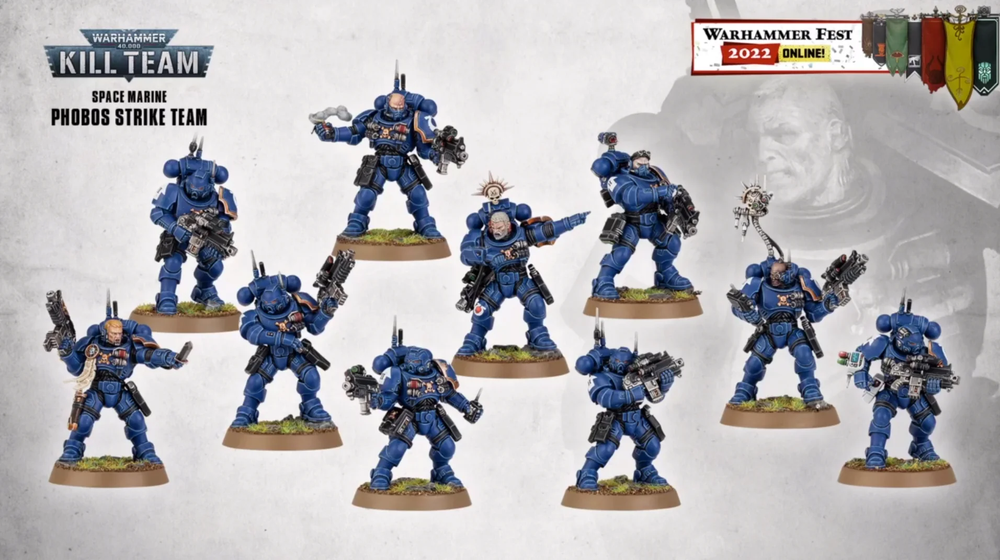

La Humanidad
El Ágila Imperial
Los Humanos (Homo sapiens), también conocidos como Humanidad u Hombres, son la especie inteligente más dominante en la Vía Láctea en el milenio 41 d.C.
Los humanos son mamíferos bípedos que evolucionaron originalmente a partir de ancestros primates en el mundo de Terra en el Sistema Solar que han demostrado preferir sociedades jerárquicas y altamente estratificadas. La humanidad es una especie agresivamente violenta, territorial y expansionista que, bajo el gobierno del Emperador de la Humanidad, ha demostrado poseer poca tolerancia hacia otras formas de vida inteligente.
La humanidad está dividida en una multitud de facciones, que trabajan a favor o en contra de los intereses generales de la Humanidad en sus intentos por mantener el control sobre la galaxia y sobrevivir ilesos en un universo increíblemente hostil. Sin embargo, la gran mayoría de los humanos viven bajo el gobierno autoritario del imperio teocrático interestelar conocido como el Imperio del Hombre.
El Imperio de la Humanidad es el mayor imperio estelar de la galaxia y se extiende desde la Sagrada Terra hasta las inmediaciones de la Franja Este y las distantes Estrellas del Halo. Está compuesto por un millón de mundos e innumerables almas que dirigir, gobernadas por el Dios-Emperador de la Humanidad.
Ejércitos enteros de escribas intentan cotejar el número de habitantes del Imperio, pero esta tarea resulta interminable e imposible, ya que en el reino del Emperador pueden hallarse todas las clases de mundos imaginables: húmedas y sofocantes junglas pobladas por salvajes que empuñan garrotes, tundras heladas con gigantescas ciudades cavadas en glaciares, abrasadores mundos desérticos, mundos forja industrializados y contaminados, mundos colmena donde habitan billones de personas apretadas en masivas megaciudades o gigantescos mundos cardenalicios donde los edificios se destinan al Culto Imperial.
Esta diversidad de mundos supone también una amplia variedad de culturas y los habitantes humanos suelen variar enormemente de unos a otros en argot, costumbres y apariencia.
Ultramarine Espacial
Escuadra de Marines Espaciales
